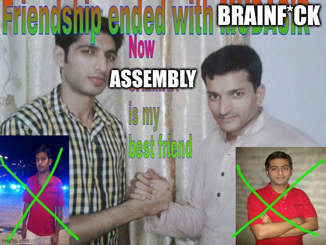

Welcome to the Site
June 2025
Yo! This is my random ideas website if you want serious enquiries click the portfolio icon on the desktop.
Yo! This is my random ideas website if you want serious enquiries click the portfolio icon on the desktop.
Brainf*ck is no longer my friend. So I started to learn assembly.
My name is Dominik Nagy and I am a programmer and a musician from Slovakia. I am currently studying at the vocational school in Prie[...]
I am currently still even after years my Java based programming language (still not hosted on github or anywhere), I want to push it out when I finish it.
I go on some hackathons, I am also writing some stuff. (Book)
Yo! This is my random ideas website if you want serious enquiries click the portfolio icon on the desktop.
Brainf*ck is no longer my friend. So I started to learn assembly.